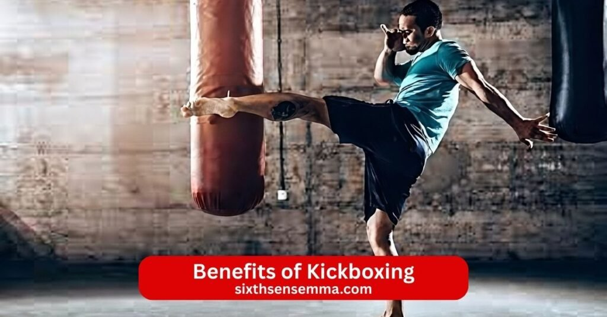
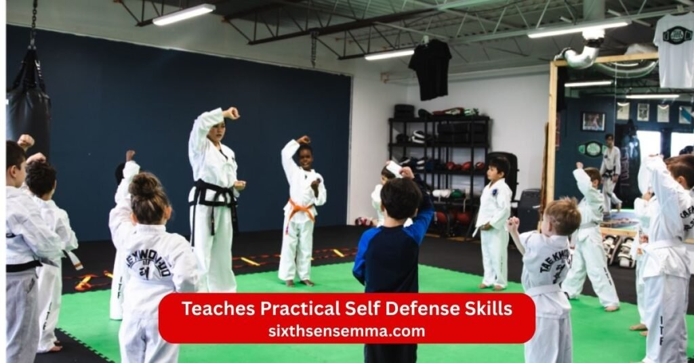

Top 10 Benefits of Kickboxing for Fitness Strength and Mental Health

Benefits of Kickboxing come from this high energy martial art that blends punches kicks and dynamic movement into one powerful workout. Kickboxing mixes elements from boxing Muay Thai and other combat sports to create sessions that challenge your whole body and mind. You throw fast combinations spar lightly and keep moving which gets your heart rate up and burns calories quickly. People choose kickboxing because it feels exciting compared to regular gym routines while delivering real results like better fitness stronger muscles and sharper self defense skills. Kickboxing is a great way to build cardiovascular health improve balance and coordination and boost mental focus all at once. Whether you train three times a week or more the mix of cardio strength training and technique makes every class effective and fun. At places like Sixth Sense MMA kickboxing becomes more than exercise it turns into a path to greater confidence toughness and overall health.
- Full-Body Workout
- Effective Weight Loss and High Calorie Burn
- Improves Cardiovascular Health
- Builds Strength and Endurance
- Enhances Coordination and Balance
- Improves Flexibility and Mobility
- Teaches Practical Self-Defense Skills
- Reduces Stress and Improves Mental Health
- Boosts Confidence and Self-Discipline
- Suitable for All Fitness Levels
1. Full Body Workout
Kickboxing is a great full body workout because it uses every major muscle group. Punches work your arms shoulders chest and back while kicks hit your legs hips glutes and core. You twist turn and balance during every move which engages muscles you might miss in other physical activities. Kickboxing involves strength training and cardio at the same time so your whole body gets challenged in one session. Typical kickboxing class keeps you moving without long breaks which makes it effective for overall physical health.
2. Effective Weight Loss and High Calorie Burn
Kickboxing helps you lose weight because it burns calories at a high rate. The high intensity moves like punch and kick combos keep your heart rate up and turn your body into a calorie burning machine. A good kickboxing workout can torch more calories than steady exercise because it mixes aerobic and anaerobic effort. Kickboxing is a great way to burn calories fast and many people see changes in body shape when they attend kickboxing three times a week. It also builds muscle which helps keep metabolism active even outside the studio.
3. Improves Cardiovascular Health
Kickboxing improves cardiovascular health by pushing your heart and lungs hard. The constant motion raises heart rate and improves oxygen uptake which strengthens your heart over time. This aerobic and anaerobic exercise lowers the risk of heart disease and boosts cardiovascular endurance. Kickboxing can help with maximum oxygen uptake so everyday tasks feel easier. Studies suggest that kickboxing three days per week brings significant improvements in heart health for most people.
4. Builds Strength and Endurance
Kickboxing builds muscle strength and endurance through repeated powerful movements. Punching and kicking develop arm leg and core power while holding stances builds stability. The strength and conditioning part comes from bodyweight resistance and explosive actions. Kickboxers often gain muscle definition and better overall endurance. Kickboxing offers a way to build muscle without heavy weights and the high intensity style makes you last longer during physical activity.
5. Enhances Coordination and Balance
Kickboxing helps improve balance and coordination because you must move your hands and feet together smoothly. You learn to shift weight quickly pivot and strike accurately which sharpens timing. Offensive and defensive techniques train your body to react fast. Regular kickboxing training improves balance and coordination which carries over to other sports and daily life. Many notice better control and fewer clumsy moments after consistent practice.
6. Improves Flexibility and Mobility
Kickboxing boosts flexibility and mobility through dynamic stretches and high kicks. You stretch your hips legs and back with every roundhouse or front kick. The full range of motion in combinations keeps joints loose and muscles long. Kickboxing may help with mobility even for people with multiple sclerosis according to some pilot study findings. Regular sessions make your body feel more open and ready for movement.

7. Teaches Practical Self Defense Skills
Kickboxing teaches practical self defense skills through real combat sports training. You practice punch and kick techniques that work in close or medium range. The focus on offensive and defensive moves builds confidence in handling threats. Kickboxing is useful outside the studio because it prepares you to strike and protect yourself quickly. Many join kickboxing class specifically to feel safer in real situations.
8. Reduces Stress and Improves Mental Health
Kickboxing reduces stress by letting you release energy and tension through hard strikes. The physical effort triggers endorphin release which lifts mood and leaves you feeling calm afterward. High intensity workouts like kickboxing help clear your mind and improve mental focus. Kickboxing is a great workout for mental toughness because you push through fatigue and stay present. Additional benefits of kickboxing include better concentration and a positive outlook from regular training.
9. Boosts Confidence and Self Discipline
Kickboxing boosts confidence as you see progress in power technique and fitness levels. Each class builds self discipline because you show up and give effort even on tough days. Mastering combinations and sparring safely makes you feel capable. Kickboxing helps people stand taller and face challenges with more belief in themselves. The mental toughness gained from training carries into other areas of life.
10. Suitable for All Fitness Levels
Kickboxing is suitable for all fitness levels because instructors adjust intensity for beginners and advanced students. You start slow with basic punches and kicks then add speed and power as you improve. Gear you’ll need is simple like gloves wraps and comfortable clothes. Kickboxing is the perfect choice whether you are new to exercise or already fit. Participate in kickboxing at your own pace and still get a good workout with real results.
Who Can Benefit from Kickboxing Training?
Kickboxing training fits many different people because it combines high energy cardio with practical martial art skills. The workouts challenge your body and mind while staying adaptable to where you are right now. Whether someone wants to lose weight build strength or learn to defend themselves kickboxing offers clear gains. It works for those new to exercise as well as seasoned athletes who need something fresh and intense.
Beginners Starting Their Fitness Journey
Beginners benefit a lot from kickboxing because it starts simple and builds from there. You learn basic punches kicks and footwork without needing any prior experience. Classes focus on form first so you move safely and feel progress fast. The high intensity style burns calories raises heart rate and boosts endorphin which makes you feel good right away. Kickboxing helps beginners see changes in energy levels body shape and confidence quickly. Many who struggled with regular gym routines stick with kickboxing because the combinations keep it fun and the group energy pushes them forward. It becomes an easy entry into fitness that feels rewarding from the first session.
Athletes Looking for Advanced Conditioning
Athletes from other sports often choose kickboxing for advanced conditioning that takes their performance higher. The fast punch and kick combos improve speed power and explosive strength in ways that carry over to running team sports or combat sports. Kickboxing adds aerobic and anaerobic work that builds better cardiovascular endurance and oxygen uptake. Sparring and heavy bag rounds sharpen reaction time focus and mental toughness under pressure. It serves as cross training that targets weak areas like core stability hip mobility and shoulder endurance. Athletes notice they recover faster compete harder and handle fatigue better after adding kickboxing to their routine. The intensity matches what serious competitors need while keeping things varied and engaging.
Why Choose Sixth Sense MMA for Kickboxing Training?
Sixth Sense MMA stands out as the best place for kickboxing in the area because it combines real expertise with a welcoming environment focused on results. The gym goes beyond basic classes to deliver training that builds fitness strength and practical skills. People choose it because every detail from trainers to equipment supports steady progress and long term success.
Experienced and Certified Kickboxing Trainers
The trainers at Sixth Sense MMA bring years of experience and proper certifications in kickboxing and related combat sports. They know how to teach proper technique for punches kicks and combinations so you avoid injury and get maximum power. Trainers watch closely correct form on the spot and adjust drills to match your level. Their background includes competition teaching and ongoing training which means they stay current with effective methods. Beginners get patient guidance while advanced students receive tough challenges and fine tuning. This level of knowledge makes every session count and helps you improve faster than you would elsewhere.
Structured Training Programs for All Levels
Sixth Sense MMA offers structured programs designed for everyone from total beginners to advanced fighters. Beginner classes start with basics like stance punches and simple kicks building confidence step by step. Intermediate groups add speed combinations and light sparring. Advanced sessions include high intensity circuits complex footwork and conditioning specific to competition or self defense. Programs progress logically so you never feel lost or stuck. Small class sizes let trainers give personal feedback and track your growth. The clear structure keeps motivation high because you see real improvement week after week.
Modern Training Equipment and Facilities
The facilities at Sixth Sense MMA feature modern equipment that makes training safe and effective. Heavy bags thai pads focus mitts and double end bags stay in top condition for consistent use. The space has good flooring proper lighting and ventilation so you stay comfortable even during hard sessions. Protective gear like gloves shin guards and wraps is available and well maintained. Everything gets cleaned regularly to keep the environment healthy. This setup lets you focus on your workout without worrying about old or broken tools. The modern feel adds to the professional atmosphere and supports better technique and results.
Focus on Fitness Strength and Self Defense
Sixth Sense MMA balances three key areas in every kickboxing program. Fitness comes through high intensity cardio that burns fat improves heart health and builds endurance. Strength training happens naturally with explosive strikes core work and resistance from pads and bags which help you build muscle and power. Self defense skills get real attention with practical combinations defensive moves and situational drills that teach how to protect yourself. The gym does not favor one area over the others so you gain a well rounded skill set. This complete approach makes training meaningful whether your goal is better health stronger body or feeling ready for real situations.
Contact US
If you are ready to try kickboxing get fit build strength learn self defense or simply check out what Sixth Sense MMA offers we are here to help you get started.
- 817 S MacArthur Blvd #100 Coppell TX 75019 United States
- (469) 972 7800
- info@sixthsensemma.com
Conclusion
Kickboxing delivers real benefits that go far beyond a typical workout. It builds full body strength burns calories fast improves heart health sharpens coordination teaches useful self defense and strengthens your mind with better focus confidence and discipline. The high intensity sessions keep you engaged while giving lasting results in fitness physical health and mental toughness. Whether you are just starting your journey or pushing for advanced conditioning kickboxing adapts to your level and keeps you motivated.
Follow Us on Social Media
Stay connected with Sixth Sense MMA through our social media channels. Follow us for class updates, training tips, and a closer look at our self defense community.
FAQ’s
Two days a week can be enough for kickboxing if your main goal is to stay active feel better and learn basic skills. You will still get good cardio burn calories improve coordination and build some strength. Progress will be slower than training three or four times a week especially for technique power and fitness gains. If you are consistent add home drills or light shadowboxing on off days and eat well you can see real benefits. For serious improvement like competition level or big body changes more days help but two days is a solid start for most people.
Kickboxing can be better than a regular gym for some people because it combines fun skill learning and full body workout in one session. You get cardio strength coordination and mental focus all together while traditional gym routines often split them into separate machines or lifts. Kickboxing feels less boring because you hit pads spar and learn combinations instead of counting reps. A standard gym might give more targeted muscle building with heavy weights but kickboxing offers practical skills self defense and higher calorie burn in less time. It depends on what you enjoy and your goals if you like variety and excitement kickboxing often wins.
Yes kickboxing shapes your body by building lean muscle toning muscles and reducing fat. The constant full body movement creates muscle definition in arms legs core shoulders and back. High calorie burn helps drop fat so you get a more athletic toned look. Regular training improves posture balance and overall muscle tone without adding too much bulk. Many people notice tighter midsection defined arms and stronger legs after months of consistent kickboxing.
Yes kickboxing is good for belly fat because it is high intensity and burns a lot of calories. The constant movement punch and kick combos raise your heart rate and create a strong after burn effect. You engage your core heavily with every twist punch and kick which helps tone the midsection over time. When combined with a calorie deficit from diet kickboxing helps reduce overall body fat including around the belly. Many people see noticeable changes in waist size after consistent sessions.
It depends on the rules and fighters but kickboxing is often stronger in a direct fight because it allows full contact punches kicks knees and sometimes clinch. Karate styles vary some focus on points and light contact while others like Kyokushin are full contact and very tough. Kickboxing usually has more emphasis on power combinations and conditioning which gives it an edge in raw striking strength. In a street fight or no rules setting the individual skill matters most but kickboxing tends to be more aggressive and direct.
Kickboxing can be good for bone density because it includes weight bearing and impact movements. Punches against pads or bags create force through your arms and shoulders while kicks and footwork put stress on your legs and hips. This impact stimulates bone growth similar to running or jumping. Studies on high impact activities show they help maintain or improve bone density especially in adults. It is not as direct as heavy lifting but regular kickboxing adds positive stress to bones when done safely with proper form.
Kickboxing is generally stronger because it adds powerful leg kicks knees and sometimes elbows to boxing’s punches. You get more weapons and ways to attack or defend. Boxing excels in hand speed footwork and head movement but kickboxing brings extra range and damage from lower body strikes. In a stand up fight kickboxing often has the advantage due to the variety of attacks.
No 27 is not too late to start MMA. Many fighters begin in their mid 20s or later and still succeed. Your body is still strong and able to adapt quickly at that age. MMA rewards technique timing and conditioning more than raw youth. With consistent training good coaching and smart recovery you can build real skills compete or just train for fitness and self defense. Plenty of pros started around that age or older and reached high levels.
Yes a boxer can defeat a kickboxer especially if the fight stays at punching range. A skilled boxer with fast hands great footwork and head movement can close distance avoid kicks and land clean punches. Many boxers win against kickboxers by slipping leg kicks and countering. In kickboxing rules where kicks are allowed the kickboxer has more tools but a top boxer can still win with superior boxing skills.
Kickboxing can be hard on your body especially if you train intensely without proper recovery or form. Shins take repeated impact which can cause bruising or soreness. Joints like knees ankles and shoulders get stressed from twisting kicking and punching. Hands can hurt if you hit without good wraps or gloves. It is demanding but not harder than many other sports when you build up gradually rest well and listen to your body. Most people adapt over time and the toughness builds resilience.
Kickboxing does not usually cause muscle loss if you eat enough protein and calories. It is a high intensity activity that builds and maintains lean muscle through explosive movements and resistance from striking. You might lose some bulk if you are in a big calorie deficit for weight loss but most people gain or keep muscle tone. The strength training aspect of kicking and punching helps preserve muscle while burning fat. Proper nutrition and recovery keep muscle intact.
Train with us in Coppell
The first class is free. Shorts, a t-shirt and a water bottle. We lend the rest.
Book a free class